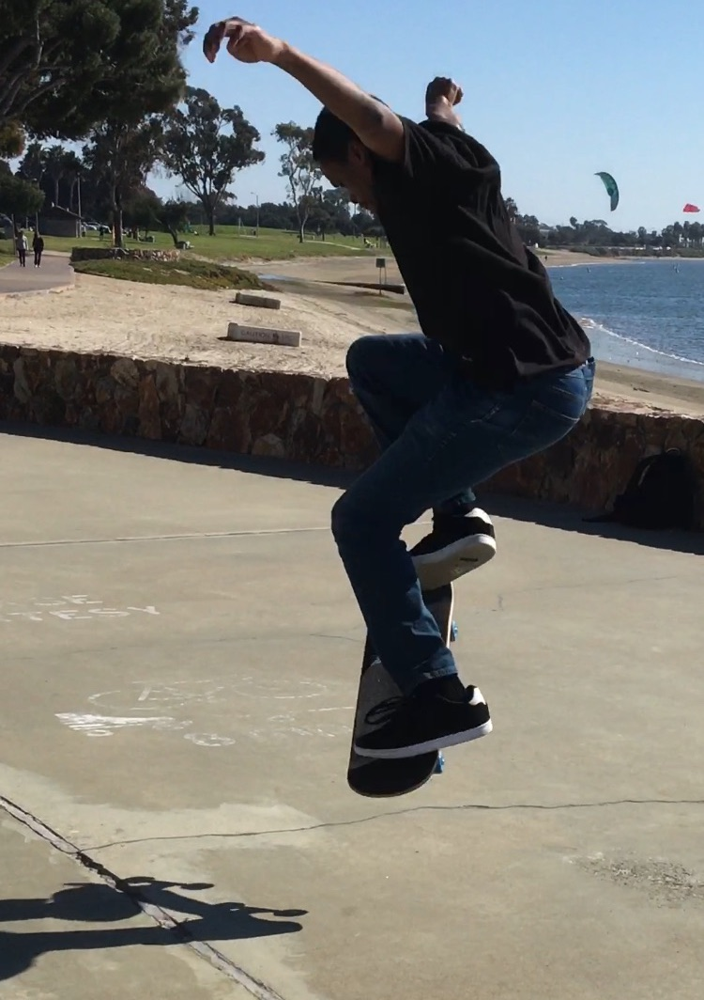

 I am currently a master’s student at Georgia Tech in Synergy Computer Hardware Systems Lab investigating discrete Convolutional Neural Networks accelerators.
I wrote my first program when I was seven or so and have been programming on and off ever since.
I am a Christian and an improving follower of Christ. I participate in various local ministries from time to time.
You can view my résumé here.